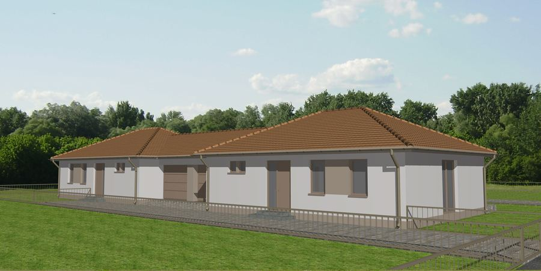

Következő lépés
Társasházat építene?
Generálkivitelezőként a teljes építkezést átvállaljuk. Kérjen ajánlatot!
Portfólió — társasházak
Válogatás elkészült társasházi és ikerházas projektjeinkből Biatorbágyon és Zsámbékon. Kattintson egy projektre a fotók megtekintéséhez. A teljes kivitelezésről a generálkivitelezés oldalon olvashat.

Következő lépés
Generálkivitelezőként a teljes építkezést átvállaljuk. Kérjen ajánlatot!